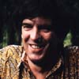

|  | ANDREW POWELL |
Biography |
Andrew Powell was born April 18, 1949 in London, England.
Andrew began his musical journey at the age of four when he began taking piano lessons. Later he would learn orchestral percussion, as well as the viola and violin. At the age of 11 he was writing scores for school produced films, which Andrew describes as, "15 minute shorts produced by the film society".
Following a period in Germany where he studied with composer Stockhausen, Powell returned to England to take a music degree at Cambridge. While there, he joined an electronic band called Intermodulation, who were pioneering the use of synthesisers. "That band was really kind of 'a live electronic'. The kind of things that people had spent years in the studio recording onto tape in the laborious ways that you had to do it in those days. We worked with people like Stockhausen and John Cage, and other composers."
Andrew’s early work with rock albums was on Steve Harley & Cockney Rebel's 1973 debut album. "I had worked on their first album and when it came around to their second album they wanted to produce it themselves. The record company said, 'we want to put you together with one of our engineers'. Alan was a very experienced engineer at this stage. When it came to orchestration, Alan said 'I've got a guy', and Steve said 'no, use the same guy as last time'". So, as fate would have it, "The Psychomodo" would be the first album Powell and Parsons would work on together, but certainly not the last.
The two obviously enjoyed working together and have worked jointly on albums for John Miles, Pilot, The Hollies, and Al Stewart.
Over the years, Powell has played many roles: performer, writer, arranger, and producer. Among his production credits are Kate Bush's first two albums, and the "Power" album by Kansas.
When Alan Parsons decided to begin the historic "Tales of Mystery and Imagination" album, Andrew would be called upon to play an important role. Andrew said, "At it's very early stages I was approached about this idea for this mammoth full-sized orchestra and choir. Straight away it was right outside of their writing field of expertise." Andrew's involvement shines through, especially on "The Fall of the House of Usher", a track which could never sound the same without him. On "I Robot" he would return to write "Total Eclipse", the only APP track not written by Parsons and Woolfson.
Powell would appear on every album, with the exception of one, "Vulture Culture". He also released an album featuring his orchestral interpretations of APP tunes on his 1983 "Andrew Powell and The Philharmonia Orchestra Plays The Best of The Alan Parsons Project".
In 1985, movie-goers attending the mystical "Ladyhawke" were to hear the equally magical soundtrack. The soundtrack was written by Powell, produced by Alan Parsons, and was performed by an APP alumni: Ian Bairnson, David Paton, Stuart Elliott, and Richard Cottle.
In 1994, Andrew joined Alan Parsons on Alan’s first post-Project album. In addition to arranging and performing on "Try Anything Once", he also wrote four of the songs. Powell also toured with The Alan Parsons Live Project.
More recently, Powell did arrangements for Elaine Paige and The Hollies.
For more about Andrew Powell, see Issue Two of The Avenue.
ANDREW POWELL
Selected Discography
| Andrew Powell Solo Albums / Soundtracks | |
|---|---|
| YEAR | ALBUM |
| 1974 | Caravan To Vaccares (Movie Soundtrack) |
| 1982 | Triumphs of a Man Called Horse (Movie Soundtrack) |
| 1983 | Andrew Powell and the Philharmonia Orchestra Play The Best of The Alan Parsons Project |
| 1985 | Ladyhawke (Movie Soundtrack) |
| 1988 | Rocket Gibraltar (Movie Soundtrack) |
| Work With Other Artists | |||
|---|---|---|---|
| YEAR | ARTIST | ALBUM | |
| 1974 | Steve Harley & Cockney Rebel | Human Menagerie | Strings, Arranger |
| 1975 | Steve Harley & Cockney Rebel | Psychomodo | Strings, Arranger |
| 1975 | David Courtney | David Courtney's First Day | Keyboards |
| 1975 | Al Stewart | Modern Times | Arranger |
| 1976 | The Alan Parsons Project | Tales of Mystery and Imagination | Organ, String Arrangements, Conductor |
| 1976 | Al Stewart | Year of the Cat | Strings, Arranger, String Arrangements |
| 1976 | John Miles | Rebel | Arranger |
| 1977 | The Alan Parsons Project | I Robot | String Arrangements, Conductor, Writer |
| 1977 | Sammy Hagar | Musical Chairs | String Arrangements |
| 1977 | Sammy Hagar | Sammy Hagar | Horn Arrangements, String Arrangements |
| 1978 | The Alan Parsons Project | Pyramid | String Arrangements, Conductor |
| 1978 | Kate Bush | Kick Inside | Synthesizer, Keyboards, Piano (Electric), Producer |
| 1978 | Kate Bush | Lionheart | Keyboards, Producer |
| 1978 | Al Stewart | Time Passages | Strings, Arranger, String Arrangements |
| 1979 | The Alan Parsons Project | Eve | String Arrangements, Conductor |
| 1979 | Chris De Burgh | Crusader | Piano, Producer |
| 1980 | John Miles | Sympathy | Arranger, Conductor |
| 1980 | The Alan Parsons Project | The Turn of a Friendly Card | Arranger, Conductor |
| 1981 | Mick Fleetwood | Visitor | String Arrangements |
| 1981 | Elaine Paige | Elaine Paige | Producer |
| 1982 | The Alan Parsons Project | Eye In The Sky | String Arrangements, Conductor |
| 1983 | Nick Heyward | North of a Miracle | Conductor, Adaptation, Orchestral Arrangements |
| 1983 | The Alan Parsons Project | Ammonia Avenue | String Arrangements, Conductor |
| 1984 | Al Stewart | Russians & Americans | Strings, Arranger, Conductor |
| 1985 | The Alan Parsons Project | Stereotomy | Arranger, Conductor, Orchestral Arrangements |
| 1986 | Kansas | Power | Producer |
| 1987 | The Alan Parsons Project | Gaudi | Arranger, Orchestra |
| 1987 | Johnny Kemp | Secrets of Flying | Guitar |
| 1989 | Michael Crawford | With Love | Arranger, Conductor |
| 1990 | Various / APP | Freudiana | Arranger, Conductor |
| 1993 | Alan Parsons | Try Anything Once | Bass, Piano, Synths, Autoharp, Electric Piano, String Arrangements, Conductor, Writer |
| 1995 | Alan Parsons | Very Best Live | Keyboards |
| 1996 | Alan Parsons | On Air | Arranger, Conductor |
| 1996 | Leo Sayer | Show Must Go On: Anthology | String Arrangements, Brass Arrangement, Woodwind Arrangement |
| 1998 | Elaine Paige | Queen Album | Arranger, Conductor |
| 1999 | Alan Parsons | The Time Machine | Conductor, Orchestral Arrangements |
| 2000 | The Hollies | Orchestral Heaven | Arranger |
Back to The Avenue Online Biography Index
Back to The Avenue Online Home Page
This page, copyright 2002 The Avenue / Avenue Communications.